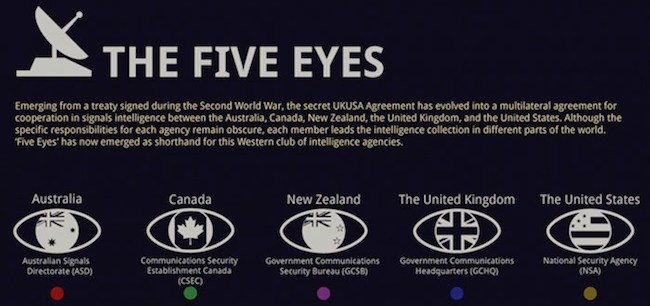

The Five Eyes
Emmanuel Loria
The Five Eyes Alliance of the United States, United Kingdom, Canada, Australia, and New Zealand

Identify
Organization
- Name: The Five Eyes
- Other Names: FVEY
Known Individuals
- Rob Joyce: Senior NSA Cybersecurity Director, known for his expertise in offensive cyber capabilities.
- Jeremy Fleming: Director of GCHQ, has led several Five Eyes initiatives focusing on cyber defense and offensive operations.
- Scott Jones: Head of the Canadian Centre for Cyber Security, an arm of CSE, leading efforts in national cyber defense coordination and international threat intelligence sharing.
- Abigail Bradshaw: Head of the Australian Cyber Security Centre (ACSC), ASD’s cyber defense branch, tasked with protecting Australian interests in the cyber domain and coordinating with Five Eyes partners.
- Lisa Fong: Deputy Director-General for Intelligence, leading initiatives in threat analysis and regional cybersecurity strategies within the Five Eyes framework.
Summary
The Five Eyes Alliance consists of a coalition including the U.S., U.K., Canada, Australia, and New Zealand, especially in high-level signals intelligence, cyber operations, and information sharing - one of the most sophisticated intelligence webs around the world. Key capabilities include: Offensive Cyber Operations; Advanced Malware Deployment; Cryptographic codebreaking; Real-time Intelligence Sharing. Whereas its operations are typically targeted against NATO-friendly nations, the growing regional adversary targeting of this alliance-such as that against North Korea-has brought spillover potential consequences to South Korea in the form of regional cyber escalation or inadvertent surveillance impacts.
Specializations and Activities
- Signals Intelligence (SIGINT): Monitoring and intercepting digital communications, particularly around regions with strategic interests.
- Offensive Cyber Operations: Disabling or infiltrating adversary systems, focusing on intelligence-gathering and surveillance.
- Malware Deployment and Exploit Utilization: Development and usage of sophisticated malware for both offensive and defensive operations.
- Cryptographic Attacks and Codebreaking: Decryption of secured communications and cryptographic defenses.
- Cyber Defense Collaboration: Shared tools and intelligence to defend against mutual cyber threats, which could include a focus on Chinese or North Korean cyber activities near South Korea.
Activities
Notable Initiatives
- Operation QUANTUM: The NSA and GCHQ, key members of the Five Eyes alliance, have used a program known as QUANTUM. This program allows them to intercept and redirect internet traffic, making it possible to place malware for surveillance.
Motivations
- The operation aims to gather intelligence and maintain a strategic edge against global competitors, including China and North Korea, which can have indirect implications for South Korea if regional communications are monitored or intercepted.
Detect and Track
Detection Strategies
Continuous monitoring of sensitive networks for unauthorized access points or malware signatures associated with Five Eyes tools (e.g., malware related to QUANTUM operations). Utilize encrypted communication channels and multi-layered network segmentation.
Tracking Plan
Partner with allied cyber defense agencies to assess unusual network traffic patterns, focusing on incoming and outgoing data flow analysis. Engage in threat intelligence sharing with regional partners to improve detection of advanced signals intelligence or traffic redirection tactics.